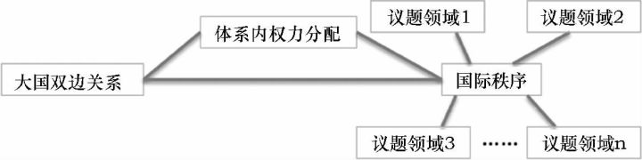

收录于合集

简
温尧
多伦多大学政治学博士候选人
原题目：理解中国崛起：走出修正—现状二分法的迷思 本文有删节
★
修正—现状的二分法在国际安全领域使用最为广泛，这一对概念深深植根于国际关系研究的现实主义传统，在均势现实主义和霸权现实主义两种理论中均被提及。其中权力转移的相关理论最为清晰地将这一二分法置于核心地位，并且在很大程度上塑造了它在学术分析和政策讨论中的影响力，相关讨论也多将理论源头归于权力转移理论。本部分将简要梳理现实主义传统中对于修正—现状二分法的相关论述，然后讨论相关理论阐述在修正对象和范围以及主导国行为和意图等问题上的缺陷。
一、 现实主义传统中的修正—现状二分法
基于经典均势体系构造理论的现实主义者最早使用修正—现状的二分法来描述两种鲜明对比的政策取向或采取这两种政策的国家。在他们看来，这两种类别的区分不证自明，因此并没有进行清楚的理论讨论。江忆恩就发现，虽然爱德华·卡尔在 《二十年危机》中数次提及 “现状国家”这一概念，却从未提供清楚的定义。尽管如此，卡尔的确在其书中大致描摹了近乎同义反复的“现状大国”定义，即现状大国的信条是 “安全”，它们满足并且乐于维持现状。
摩根索提供了更加明确的论述，他区分了现状政策与帝国主义政策两种类别。 前者是 “倾向于保持权力且不寻求利己的权力分配变化”的政策，而后者则 “意在获得更多权力……寻求有利的权力地位变化 ”。 与此类似，阿诺德·沃尔弗斯也指出现状大国和修正大国追求不同的目标。修正大国追求的是“自我扩展”，这一过程伴随着 “频繁而剧烈的权力扩张尝试 ”，在必要时，它们会利用武力改变现状，并且 “给现存秩序带来显著改变 ”。相比之下，现状国家则追求 “自我存续”，它们近期并无增长权力和追求优势地位的动机。在其论述中，沃尔弗斯注意到一个重要的细节：现状大国可能也希望改变，但它们通常不寻求权力的扩张和使用武力。同时值得注意的是，摩根索和沃尔弗斯都在其定义中同时囊括了对意图和行为的描述。
伴随着沃尔兹结构现实主义的风行，均势现实主义理论家关于修正—现状的讨论暂时停止，因为结构现实主义主张单元层次的变量只能提供片面的、还原主义的解释，构建理论的努力被引向体系层次。
与均势现实主义仅是简略涉及不同，基于霸权稳定及其更替而构造的霸权现实主义理论一直对修正—现状二分法的发展和推广有着更加重要的影响。 吉尔平的霸权更替理论提出，国际政治的变化由体系中权力均衡和国家的成本—收益计算所驱动，国际体系中循环往复地出现主导国家的更替。 不同国家的权力以不同速率增长，由此带来的声望追求和潜在物质利益考量等动机促使国家试图扩张权力并改变体系。因此， 为了自身利益改变国际体系的国家即为修正主义国家，而现状国家则是试图维持现有体系的主导大国。 修正—现状这一对概念在吉尔平的论述中只是附带提及，在理论构建中并没有起到重要作用，但与其理论相似的权力转移理论却深入利用了这一二分法。
权力转移理论由奥甘斯基提出，并由其一干弟子不断发展。这一理论的基本假设是：国际体系中存在一个等级制，体系中的最强国处于顶端，它创设并维持当前的国际秩序，并从这一秩序中获取最多利益。 因为国际体系中的 “现状”——主导国建立的国际秩序 ——最符合主导国的利益，所以主导国自然被视作满意的维持现状国家。 与此同时，其他非主导大国通过经济增长快速聚集权力，由于当前秩序及利益分配规则在它们相对弱小时便已确定，当它们成长为大国时势必不满于现状。因此，随着大国继续成长，它们 “不满自身在体系中的位置，并且渴望重订规则”。基于此， 权力转移理论提出，当崛起的不满意的挑战者试图改变现状而主导大国拒绝改变时，体系战争一触即发。
在权力转移理论中，权力转移或者转移的趋势解释了战争爆发的可能，而对现状的不满则给出了崛起国使用武力改变现状的动机，因此，对现状的满意程度或者对修正的渴望程度就成为这一理论中至关重要的变量。这一变量的理论重要性以及中国崛起背景下权力转移理论获得的广泛关注，使得修正—现状二分法在理论和政策讨论中频繁出现。尽管许多研究者并不必然赞同权力转移理论的整套理论假设和主张，但众多研究对这一二分法的使用明显受到了该理论的影响或启发。
二、 修正何种现状？
在谈及修正—现状二分法时，学者关注的重点往往在于崛起大国。尽管并没有学者断言崛起大国一定是修正主义国家，崛起大国不断增长的权力及其新的利益需求，让它们自动成为修正主义国家的“嫌疑人”。那么这类国家谋求修正何种现状？由前文可见，在理论层面，学者们基本都认为修正主义国家的行为对国际体系有着全局性的影响，它们最重要的目标和影响在于修正国际结构或者国际秩序。经典均势现实主义者通常关注崛起国谋求权力扩张的行为以及由此带来的体系内权力分配的变化，这些纯粹的权力政治因素决定了国际体系的结构。吉尔平和权力转移理论家们在谈及国际体系现状时则突出国际秩序的存在，他们通常假设这一国际秩序作为整体而存在，并且统摄国际关系。然而，具体到不同的实证研究中，讨论涉及的修正对象各不相同而且常常被混为一谈，导致人们对修正主义的误解和误判。这个问题很大程度上与理论层面缺乏具体的澄清和定义有关系，也就是说，修正主义指向的对象究竟为何？
这个问题通常涉及密切联系却不能等同的三个概念： 崛起国与主导国间的双边关系、体系中的权力分配、国际秩序。 国际秩序与权力分配并不完全等同，权力分配也并不是完全由崛起国与主导国的双边关系决定的。一些实证研究却有意将这些有差异的概念等同起来，导致其不能令人信服地得出关于修正—现状的结论。一个国家可能只是不满于自身在国际体系中的相对位置，它不一定谋求修正构成国际秩序的整套规则和规范。同样，一个国家可能只是因为各种原因而对主导国不满，这种不满或许与权力分配或国际秩序都毫无关系。
围绕权力转移理论的一些实证检验彰显了这一混淆概念和对象的问题。比如，一些研究采用的衡量指标是双边关系中军事投入的数据，但很多原因都能促使一个国家加大军事投入，崛起国军力增长也并非只能针对某一个国家。这类指标剥离了具体情境，并不能使我们直接判断某个具体国家对基本的权力结构或者国际秩序怀有何种态度。再比如，塔门和库格勒在谈到权力转移与中美关系时，将台海问题以及中美围绕此问题的互动当作衡量中国是否不满于现状的指标。尽管台海问题的确可能使中国怀有不满情绪，甚至为此动用武力，但这一可能性背后的逻辑与权力转移理论所主张的机制迥异，而且这种情况下产生的不满情绪并不一定会上升为中国对国际体系整体现状的不满。
更加值得注意的是， 时间应该成为一个重要的维度。 在主权国家体系出现之后，国际秩序的内涵并非一成不变，而是不断进行演化和分化。其中应特别注意武力扩张以及议题领域这两个与修正 —现状二分法相关的问题。 一方面，武力扩张和领土征服在国际体系中的频率和作用都大幅下降。 这方面的变化可以从两类现实主义理论的论述管窥一二。经典均势现实主义者集中关注体系中的大国权力均衡或失衡现象，他们的经验材料多出自大国纷争频繁、领土边界不断变更的时代，因此他们在界定修正 —现状二分时，对武力扩张和大国权力变动有着异常的敏感性。而尽管吉尔平以及权力转移理论者们也强调大国的领土扩张冲动以及大国间的武力冲突，但他们在讨论修正 —现状这对概念时，已经充分考虑各类国际规则、规范在国际秩序构成中的重要性。在实证层面，国家利用武力变更领土边界、进行侵略扩张的行为，无论在规范层面还是物质收益层面，都已经不被鼓励甚至成为禁忌。特别是二战之后，几乎很少出现国家“死亡”，相反，国际体系中的国家数量一直稳步增加。在这种国际环境中，武力扩张这种曾经非常直观的修正国际现状的指标变得不那么重要了。
而且，对武力扩张的重视体现了过去国际关系实践中国际秩序与权力分配相对高的对应关系，这背后的假定是，伴随着大国间权力分配的变动，国际秩序也将遭遇重大变革。但是，随着国际体系的演化，国际秩序日益由众多获得广泛认可和支持的制度、规范和准则构成，大国之间对构成国际秩序的这些基本单元未必没有共识，权力等级的更替因此也未必造成秩序的根本变化。权力结构与国际秩序之间因而也越来越难以建立线性的直接对应联系。
**另一方面 ，国际秩序的精细化和复杂化也在加深。**主权规范以及大国战争的过时使得传统安全领域仅仅成为众多重要议题中的一项。经济、环保、人权等传统国际政治中的 “低政治 ”议题在国际事务和全球治理议程中的地位不断上升，议题领域间既相互交织又有各自独特的发展。伴随着国际体系中重要议题领域的增多和复杂化，作为抽象概念的国际秩序在实践中正日益变得区隔化和碎片化。如果秩序由复杂的制度和规范网络所构成和定义，那么在当前背景下，是否存在一个完整而一贯的国际秩序就成为一个值得争论的话题。一个国家对不同议题领域的现状或许怀有不同程度的修正意向，但某个议题领域中的秩序变化也不必然外溢到另一个议题领域，因此要定义作为修正对象的国际秩序本身就成了难题。这部分解释了为什么不同学者往往选取迥异的指标和数据作为自己判断修正—现状属性的标准，从而造成一些研究混淆修正对象并误读国家意图的乱象。
尽管权力转移理论或明或暗地将修正主义倾向与国际秩序联系在一起，学者们甚少直接谈论这一点，国际秩序仿佛只是一个抽象的背景概念。正如许多学者批评的，现有论述对国际关系中的规则、国际秩序提供的利益、国家看重的收益等问题，都缺乏清晰的辨识和界定。国际体系本身发生的不断演化和分化，也使得学者对修正行为和对象的判断和解读变得更加困难。由此， **“ 现状 ”经常被等同为主导国的利益，不同层次的概念也经常被混淆，出现了 “与主导国冲突即为挑战现有权力结构，也即为谋求修正国际秩序现状 ”的逻辑混乱，**如图－１所示。这一缺陷同时带来另一个重要弊端，即很多时候在修正 —现状框架下讨论大国政治时，主导国实质上被忽视或简单带过。

三、 主导与修正的区分
崛起大国有可能扮演修正主义国家的角色，这一点毋庸置疑，但在涉及修正 —现状二分法的许多研究中，这一或然命题往往变成了 “崛起大国是唯一有可能修正现状的国家”。例如，卡斯特纳和桑德斯的研究假设，如果中国领导人表现出更愿意出访所谓“流氓国家”、与美国交恶的国家或者美国的盟友，那么中国便存在修正主义意图。在这里，美国的对外关系成为衡量其他大国修正与否的标尺，美国更被直接假定成了现状的定义者。这是因为在权力转移理论等研究的论述中，主导国天然是现状大国。 这种假定混淆了一个国家的权力大小和满意程度，在当前拥有体系中最强的权力并不必然意味着主导大国是满足现状的。
关于当前 “单极时刻”的研究对这个问题有很大的启发意义。 在单极世界中，唯一的超级大国占据着权力等级的最高点，这样的体系应该最符合权力转移理论所描述的国际关系世界。 在单极体系中，制衡主导国家天然地被视为一种修正主义行为，单极国家能够自如地回避国际关系中常见的许多外部限制。尽管乐观的自由主义者认为，美国作为自由秩序霸权国长久以来奉行战略克制，但在这种宽松甚至纵容的环境中，单极国家完全可能通过改变相对权力关系以及各种国际准则和安排来修正现状以攫取利益。杰维斯认为，无可匹敌的超级大国很难抵制扩张权力、任意而为的诱惑，心理层面的诱因可能使超级大国即使在满意现状的时候仍然寻求扩张、先发制人以防自己的未来利益受损。
除了攫取利益和防患于未然的考虑，主导大国也可能为了当下止损而产生修正现状意图。在批评 “主导大国即现状大国 ”这一假定时，一些学者质疑霸权国是否真的可能保证自己从现有国际秩序中长久地不对等攫取最大的利益份额，既有理论低估了保持这样一个国际秩序所需付出的高昂成本。为了解决维持现状过程中遇到的各种麻烦，主导国很可能选择进一步扩张或者大幅度修改体系中的游戏规则。例如，不少实证研究已经指出，美国的确正在采取一些措施来护持自身的霸权地位和不对等利益。
这些批评实际上指向了许多现有研究存在的功能主义倾向，即认为制度由主要行为体理性设计并能长期发挥预期效用。皮尔森认为，这种观点的重大缺陷在于，其假定行为体初始意图与制度结果能够完全吻合，即制度被设计出来后能够按预期运行，并长期满足设计者的利益需要。事实上，随着时间推移，由于行为体本身固有的局限性以及制度运行后可能产生的各种复杂效应，行为体意图与制度实际作用之间将会逐渐拉开距离。皮尔森对理性选择制度主义的这一批评同样适用于主导国与其所创国际秩序的关系。主导国本身的利益和行为将随着内外情势的变化而不断变化，国际秩序中的各种规则和制度的运行情况也会因为各种原因发生改变，因此， 国际秩序与主导国利益的契合度并不会一直维持秩序初创时的状态，主导国同样可能有修正现状的充分动机。
此外，从这里的讨论可以看出，修正—现状二分法在某种程度上模糊了主导大国的意图及其行为本质问题。 就规范层面而言，主导大国至少应该被视为道德中性而非先验正义或正确的一方，它们常常有着与其他大国相似的利益追求及行事逻辑。 尽管如此，当主导大国被天然地定义成现状大国时，这种主导地位仿佛也被视为某种天然正确而无须审视之物。在修正—现状的讨论框架中，主导大国与修正主义国家似乎成了完全不同的两个对立面。（注释略，详见原文。）
文章来源： 《外交评论》2017年第5期
筛选： 晞哲 编辑： 敖遊
声 明
国政学人微信公众平台系非盈利学术平台。建立初衷是方便广大学人进行学术研究，促进学术的传播和交流，不做任何商业用途。如有任何权利问题，请直接与我们联系。